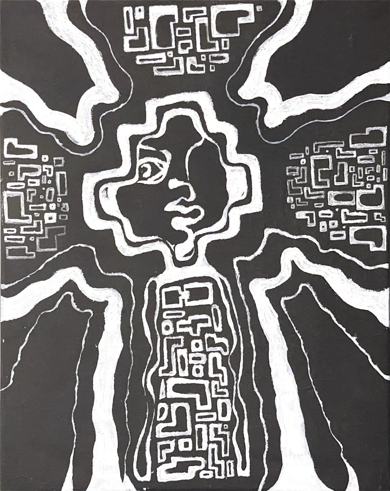
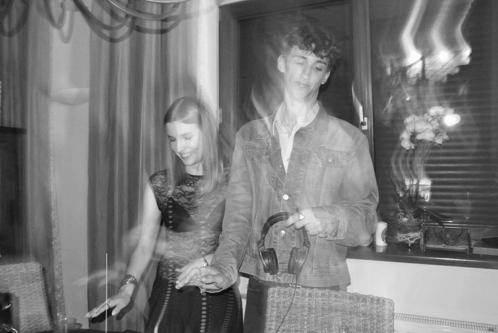
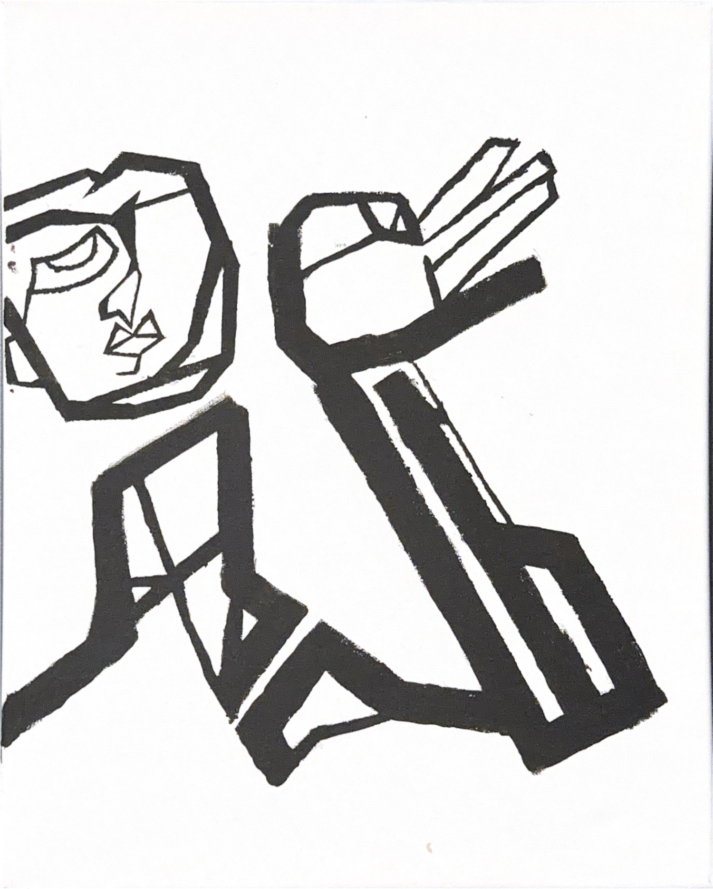
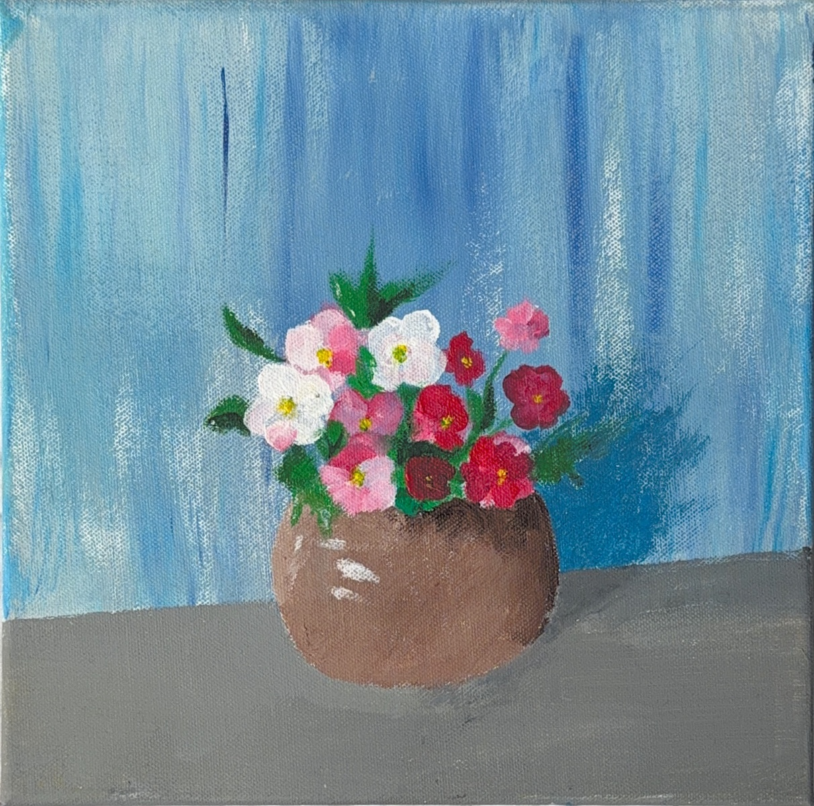
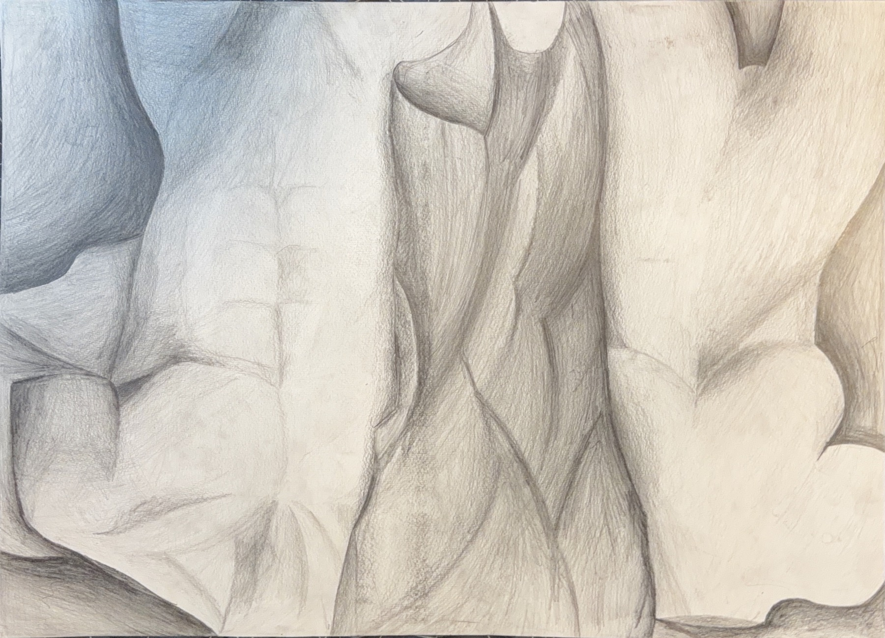
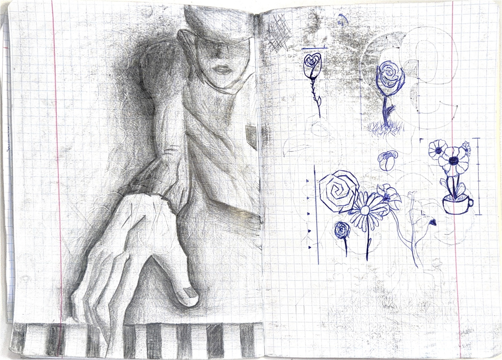
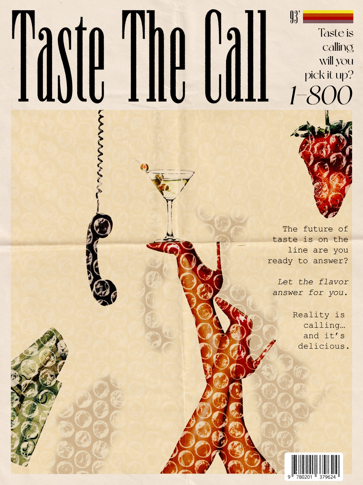
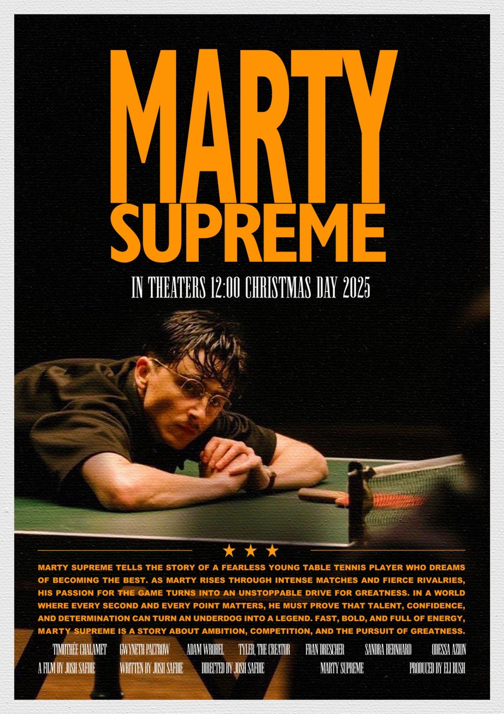

Nazywam się Adam Wróbel.
Zbieram tu rzeczy, które zrobiłem w ostatnim czasie: obrazy, plakaty, szkice, video i szkolne projekty.
adas.wrobel
— portfolio
POSTERS / PAINTINGS / SKETCHES / SCHOOL PROJECTS / EDITS / THINGS IN BETWEEN

ARCHIVE OPEN
OPEN COMPREHENSIVE ARCHIVE / 01
Selected Works
Wybrane prace z folderu. Bez ustawiania wszystkiego pod jeden styl.
OPEN ARCHIVE / SELECTED WORKS

VIDEO FILE / EDIT
SUPPORTING FILES / PAINT + DRAWING
Flowers.jpg

Mannequin_Study.pdf

PROCESS / SKETCHBOOK
Sketchbook
Szkicownik szkolny.
Rysunek powstał bez dużego planu, bardziej jako coś robione w międzyczasie.
DRAG / INSPECT
Sketchbook_scan.png

SELECTED CATEGORY
School Projects

SCHOOL BRIEF / POSTER TEST
COMPOSITION STUDY / PSD FILES
